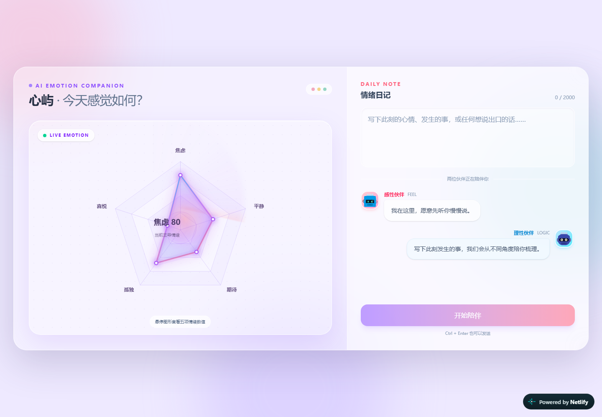

既能听懂情绪，也能陪你找到下一步的桌面伙伴。
用户写下日记后，感性宠物先接住感受，理性宠物再给出现实建议； 五维情绪分数同步变成发光雷达图，让用户“看见情绪”并开始行动。

心屿面向学习、比赛和工作中容易焦虑的年轻人。 它不要求用户填写复杂问卷，只需要写下此刻发生的事，就能获得情绪画像和两个角色的回应。
分析焦虑、喜悦、孤独、期待、平静五个维度，每项 0–100 分。
感性伙伴共情，理性伙伴提出具体建议，两人交替互动而不是各说各话。
ECharts 发光雷达图实时更新，让抽象情绪变化变成一眼能看懂的图形。
在电脑或手机浏览器进入公网演示地址。
在右侧输入框写下真实感受或发生的事。
点击“开始陪伴”，按钮进入加载状态。
左侧雷达更新，右侧宠物消息逐条出现。
修改日记再次体验，比较不同情绪结构。
心屿用于情绪自我觉察和行动梳理，不进行心理疾病诊断。 遇到自伤、伤人或紧急危险时，系统会优先提醒用户联系现实中的紧急支持。
心屿把一次日记输入拆成“感受被理解”和“问题有方法”两种互补体验， 同时把可视化与对话绑定在同一次反馈中。
感性伙伴先接住情绪，理性伙伴不否定感受，进一步给出低负担行动建议。两种声音在同一次对话中产生互动。
同一个模型同时生成五个情绪分数和 4–6 条角色对话，减少等待、调用费用和数据不一致。
发光雷达图、中心主导情绪和聊天内容互相解释，用户能看见情绪结构，而不是只得到一个分数。
毛玻璃桌面小组件、柔和渐变和逐条气泡动画，降低情绪记录的心理门槛，适合比赛现场快速展示。
API Key 只保存在 Netlify 服务端 Secret 环境变量中；前端通过同域 /api 调用，不接触密钥。
页面和 Serverless API 部署在同一域名，评委打开一个公开网址即可完成输入、分析和对话体验。
项目采用 AI 辅助生成与调试代码，但没有把“AI 说完成了”当作验收结果。 每一层都通过构建、接口、数据结构和真实调用进行测试。
用 AI 辅助生成 UI、ECharts 配置、Node API 和 Prompt，再由开发者逐阶段检查与调试。
验证五维字段是否齐全、分数是否在 0–100、对话是否 4 或 6 条、角色是否严格交替。
从公网页面请求 Serverless API，再真实调用 DeepSeek，检查返回结果能否驱动图表和气泡。
| 测试项 | 验收内容 | 结果 |
|---|---|---|
| 前端生产构建 | Vite 成功生成静态页面和 CSS/JS 资源 | 通过 |
| 公网页面访问 | Netlify 站点无需登录，HTTP 返回 200 | HTTP 200 |
| 服务端 Key 读取 | /api/health 返回 hasApiKey = true | 通过 |
| 五维情绪结构 | 焦虑、喜悦、孤独、期待、平静全部存在 | 通过 |
| 双 Agent 结构 | 真实返回 4 条消息，角色为 feel/logic 交替 | 通过 |
| 异常输入 | 空日记返回 400，无 Key 返回 503 | 通过 |
| 真实模型调用 | 使用短日记请求 DeepSeek 并成功返回结果 | 通过 |
输入：“今天有点累，但完成了任务，对明天有些期待。”
验证重点：五个分数是否完整、对话数量是否正确、 感性与理性是否交替、前端是否自动更新。
AI 能快速帮助写测试用例、定位构建错误和模拟异常场景； 但真实用户可读性、API 费用、部署域名可达性和安全边界仍由人工验收。
浏览器负责体验，Serverless API 负责安全调用，DeepSeek 负责理解与生成， ECharts 负责把结构化情绪变成可视化画面。
| 技术 | 作用 |
|---|---|
| Vue 3 + Vite | 构建单页应用，管理文本、对话、Loading 和错误状态；Vite 负责本地代理和生产构建。 |
| Tailwind CSS | 实现桌面毛玻璃小组件、左右双栏和响应式布局，保证演示视觉统一。 |
| ECharts 6 | 渲染五维情绪雷达图；通过渐变、阴影和动态更新形成发光效果。 |
| Node.js / Express | 本地调试 API；保管 Key、拼接 Prompt、请求 DeepSeek 并校验返回 JSON。 |
| Netlify Functions | 线上运行同域 Serverless API，与静态页面一起部署，避免暴露 Key 和跨域问题。 |
| DeepSeek Chat | 使用 System Prompt 与 JSON Object 模式，一次生成情绪分数和双角色对话。 |
以下图片来自 2026 年 10 月线上演示版本，包含情绪雷达、日记输入和双 Agent 初始对话。
展示焦虑、喜悦、孤独、期待、平静五个维度；中心显示当前主导情绪。
用户自由描述事件和感受，不需要套用固定句式，最多输入 2000 字。
感性与理性角色使用不同头像、颜色与气泡位置，形成明显角色分工。
https://xinyu-ai-demo-mu831.netlify.app
打开后输入一段日记，点击“开始陪伴”，即可体验真实 AI 返回结果。
本作品为参加传智杯-AI创新应用挑战赛独立制作的原创 Web 原型， 此前没有公开发表，也没有获得过奖项。
项目当前仅用于本次比赛的作品展示与公网演示，没有论文、专利或其他公开发表记录。
截至本作品介绍文档生成时，项目未参加或获得其他赛事奖项。
项目不是基于其他已有项目直接改造，而是围绕“双 Agent 情绪陪伴”这一想法， 从界面骨架、ECharts 雷达图、后端 API 到公网部署逐步完成。 开发过程中进行过多次内部迭代，这些属于本作品自身的优化。
先完成毛玻璃双栏布局、日记输入区和双宠物气泡，确认页面可运行。
用假数据先验证 ECharts 五维雷达、发光效果和响应式更新。
加入严格 Prompt、JSON 契约、后端代理和双 Agent 对话渲染。
把 Key 从前端移到服务端，增加校验、限流和单链接云部署。
心屿是一款面向年轻人的双 Agent 情绪陪伴应用：它让感性伙伴接住感受， 让理性伙伴给出行动建议，并用发光情绪雷达把“此刻的自己”直观呈现出来。